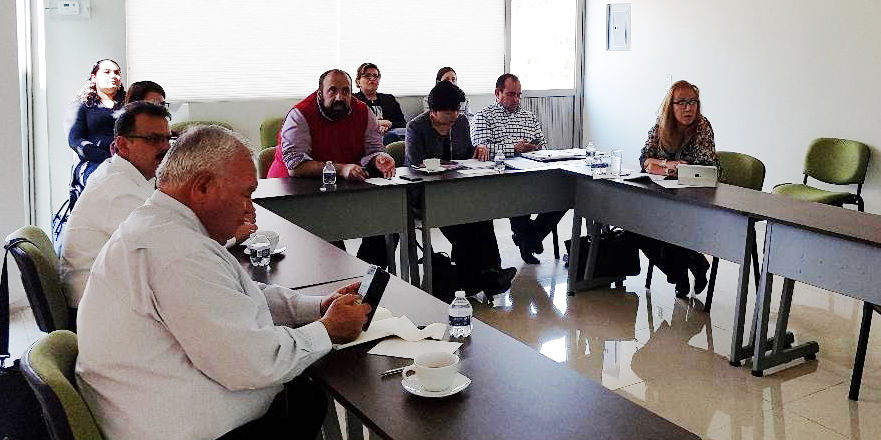
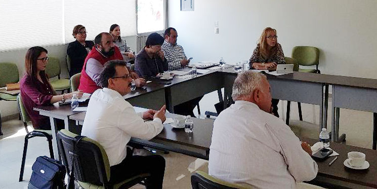

Analizan avances de plan de trabajo 2018 del CC del SEA Coahuila
Comunicado de Prensa.
Sistema Anticorrupción del Estado de Coahuila. Consejo de Participación Ciudadana.
Saltillo, Coahuila.- Integrantes del Comité Coordinador del Sistema Estatal Anticorrupción en Coahuila participaron en una reunión de trabajo y deliberación del Plan de Trabajo del Comité Coordinador para este año.
El pasado miércoles 28 de febrero de 2018, en la Sala de Juntas de la Auditoría Superior del Estado acudieron Armando Plata Sandoval, auditor Superior del Estado; Sandra Rodríguez Wong, magistrada presidenta del Tribunal de Justicia Administrativa de Coahuila; Manuel Gil Navarro, presidente del Consejo de Participación Ciudadana; Luis González Briseño, presidente del Instituto Coahuilense de Acceso a la Información Pública y Miriam Cárdenas Cantú, magistrada presidenta del Tribunal Superior de Justicia del Estado, así como representantes de la Fiscalía Especializada en Delitos por Hechos de Corrupción, y de la Secretaría de Fiscalización y Rendición de Cuentas del Gobierno de Coahuila.
Manuel Gil Navarro, presidente del Comité Coordinador del Sistema Estatal Anticorrupción de Coahuila presentó los detalles y alcances de la propuesta de Plan de Trabajo del Comité Coordinador para este 2018, que incluye el sentar las bases de funcionamiento del Sistema Estatal Anticorrupción, así como de las instancias de coordinación que en el intervienen para poder definir una política anticorrupción eficaz que permita prevenir, detectar, controlar, sancionar, disuadir y combatir la corrupción.
De la misma forma, se busca coordinar esfuerzos para la capacitación, cooperación, promoción y difusión de del Sistema Anticorrupción del Estado de Coahuila por medio de cinco objetivos estratégicos y líneas de acción específicas.
Los integrantes del Comité Coordinador del Sistema Estatal Anticorrupción acordaron la fecha para la siguiente reunión, para que en el pleno del Comité Coordinador se decida sobre la propuesta de Plan de Trabajo 2018 para el órgano máximo del SEA.


